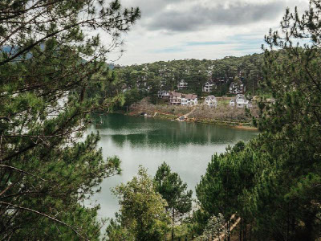
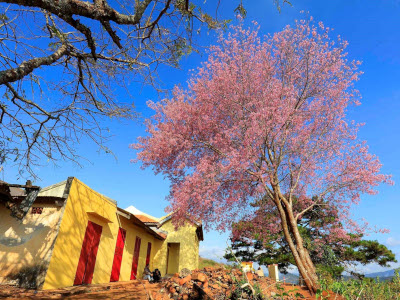

Đà Lạt hiện nay là thành phố loại 1 trực thuộc tỉnh ủy Lâm Đồng. Thành phố xinh đẹp và nổi tiếng này nằm ở trên Cao nguyên Lâm Viên của vùng Tây Nguyên nước Việt Nam.
Đến với thành phố hoa đầu tiên các bạn cần phải trải nghiệm thử. Những khoảnh khắc săn mây Đà Lạt làm ta lơ lẫn thẩn thờ như đang trên không trung. Cùng hòa quyện vào tinh hoa của đất trời, của thiên nhiên vừa ảo diệu mơ màng vừa bí ẩn. Đến nổi ta muốn bức phá hết tất cả như phép màu nhiệm đang thử thách chúng ta.